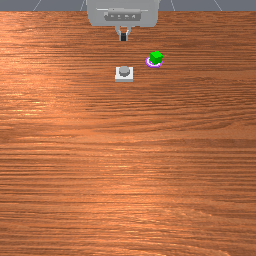
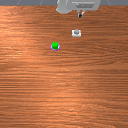
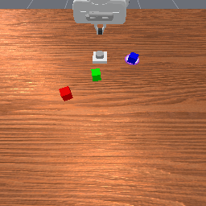

Episode 0Observe hovering


Hovering motivates adding a stationary-motion monitor to the 90-step budget.
Frame 689 · inspected after executionMemory-dependent robotic manipulation
A Self-Evolving Harness for Memory-Dependent Manipulation
Astra reasons over history, delegates to a learned controller, and revises its experience to guide future supervision.
777 / 800 episodes
of executed control steps
across all four memory suites
Revise advice, retain the controller.
How the harness works
Astra chooses the subgoal, the execution budget, and the monitors. The VLA keeps reacting to fresh observations between reviews.
The top row pauses for Astra after every chunk. The bottom row can continue within its budget, until a selected monitor or the budget prompts review.
Budgets count actual executed control steps. Monitors prompt review; official environment feedback determines task success. View the complete architecture ↗
See it in action
Selected successful episodes show how delegation, review, and direct intervention work together.
Archived observations replayed at 20 fps. Model inference and other waiting intervals are not represented in playback duration; this is not an end-to-end speed comparison. Front and wrist views are shown together. Task links also open the videos without JavaScript.
Evaluation
777 successes across 800 episodes. Each of the 16 tasks contributes 50 episodes.
automatic VLA continuation
Shares of all executed control steps, including interventions. These are execution allocations, not time or cost savings.
| Task | Memory suite | Our harness | Direct Astra | Human¹ | GroundSG + Oracle¹ |
|---|---|---|---|---|---|
| BinFill | Counting | 96% | 98% | 96% | 85.78% |
| PickXtimes | Counting | 100% | 100% | 100% | 100% |
| SwingXtimes | Counting | 96% | 98% | 80% | 100% |
| StopCube | Counting | 96% | 54% | 78% | 49.67% |
| VideoUnmask | Permanence | 100% | 94% | 90% | 98.78% |
| ButtonUnmask | Permanence | 100% | 100% | 92% | 95% |
| VideoUnmaskSwap | Permanence | 98% | 96% | 92% | 99.22% |
| ButtonUnmaskSwap | Permanence | 92% | 98% | 90% | 80.22% |
| PickHighlight | Reference | 100% | 98% | 92% | 83.33% |
| VideoRepick | Reference | 100% | 100% | 92% | 97.33% |
| VideoPlaceButton | Reference | 98% | 100% | 98% | 100% |
| VideoPlaceOrder | Reference | 90% | 98% | 90% | 100% |
| MoveCube | Imitation | 100% | 54% | 90% | 87.78% |
| InsertPeg | Imitation | 90% | 92% | 98% | 15.56% |
| PatternLock | Imitation | 100% | 100% | 84% | 97% |
| RouteStick | Imitation | 98% | 94% | 86% | 55.56% |
¹ Privileged references: human skill selection uses an oracle skill interface; GroundSG+Oracle receives true subgoals. Reference values come from the cited reports; training and evaluation protocols differ. Broader comparisons and sources ↗
Mean time falls from 513.2 to 285.6 seconds on the nine seeds successful under both policies. Across all ten paired seeds, per-chunk review succeeds on 10/10 and delegation on 9/10. Read the paired comparison ↗
Experience across episodes
In PickXtimes, a stationary-motion monitor did not trigger while the robot kept moving. Astra revised the review budget from 90 to 60 steps.

Hovering motivates adding a stationary-motion monitor to the 90-step budget.
Frame 689 · inspected after execution
The monitor does not trigger. Astra shortens the initial budget and recommends closer contact review.
Frame 284 · 90-step budget
Astra cites the revision: 16 + 16 + 16 + 12 steps, then review. A further 13 steps complete the task.
Frame 288 · revised 60-step budgetRecorded experience revision and subsequent use, with VLA weights fixed. Read the complete case ↗
The complete technical report
System design, evaluation settings, full results, experience cases, failure analysis, and appendices.